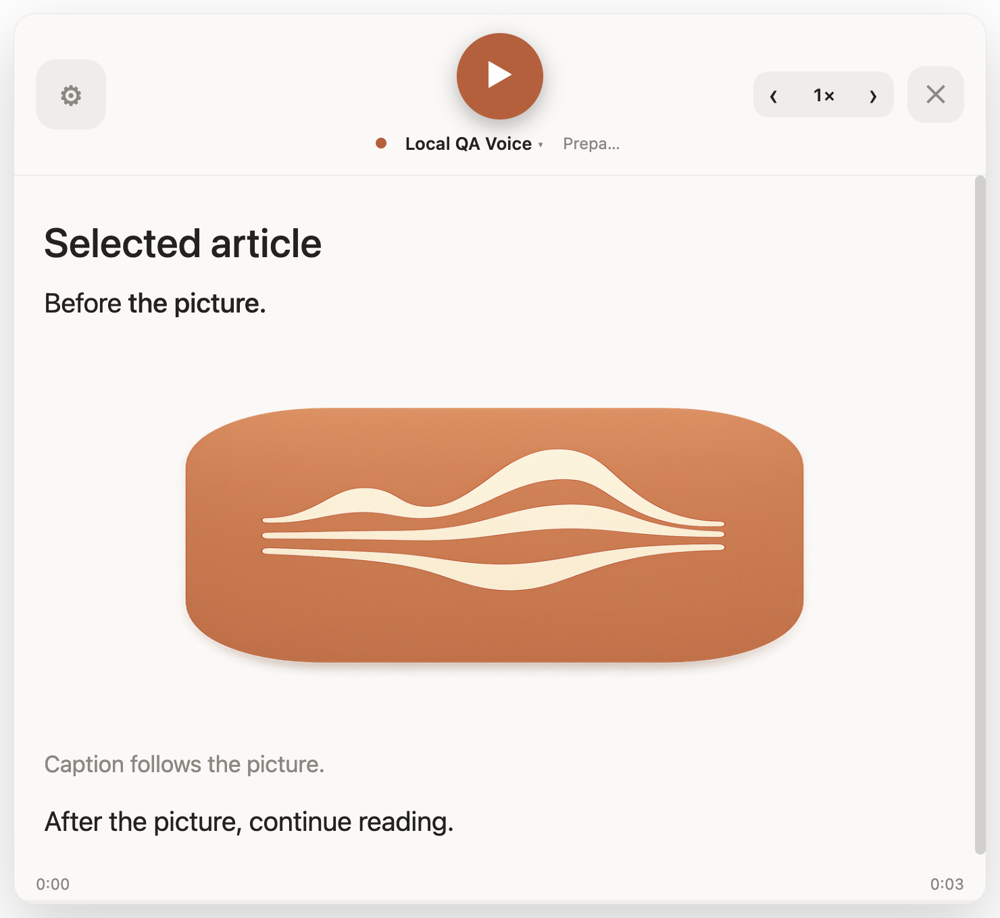
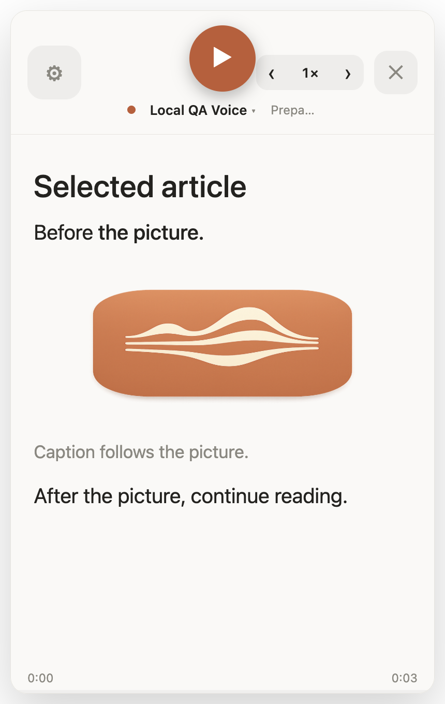

Images in the pop-up
Selected article images and captions render in order, resize proportionally, and leave speech highlighting aligned.
Fast Answer
Implemented
The sanitizer rebuilds safe images, preserves figures and captions, and sizes images to the reading window. Broken images hide while text remains readable.
Verified
All 50 automated tests and all three Chromium QA scenarios passed. Independent source review found no actionable issues.
Delivery
Branch codex/selection-images, based on origin/main e52ce13. Implementation commit 618c607103fabc39b47dea7d3981e2304bff2a95. No PR was requested or created. The repository workflow delivers by a fast-forward push to main.
Pass Criteria
- Met: Selected article images appear in document order in the real overlay.
- Met: Images fit the overlay at normal and narrow window sizes without distortion or horizontal page overflow.
- Met: Image alt text never enters speech; surrounding words and captions retain exact canonical character mapping.
- Met: Copied handlers, styles, navigation, unsafe URLs, SVG data, and unrelated source elements are excluded.
- Met: A second reading clears old images; plain text and tables still render correctly.
End-To-End Evidence
article-image: passed
Copy a selected article with a relative image and caption


resize-repeat: passed
Resize and read a new selection


safety-regression: passed
Unsafe and broken images, plain text and tables


Normal pop-up

Narrow pop-up

Implementation and decisions
- src/richtext.js: preserve IMG, unwrap PICTURE, and rebuild FIGURE/FIGCAPTION. Copy only validated source and literal alt text. Ignore alt text for canonical speech, and split words at image boundaries.
- Sources allow HTTP, HTTPS, protocol-relative HTTPS, and base64 PNG/JPEG/GIF/WebP/AVIF/BMP. Credentials, app-relative paths, file URLs, script URLs, blob URLs, inline SVG and HTML data are excluded.
- Images set no-referrer and asynchronous decoding. Copied events, style, classes, IDs, dimensions and srcset are discarded. Rebuilt images hide on load failure.
- src/overlay.html: allow HTTP(S) image loads while preserving restrictive defaults, script policy and production sandbox isolation.
- src/overlay.css: fit images to content width without changing aspect ratio; style captions consistently.
- README and AGENTS.md record image behavior and durable safety constraints.
- No capture-layer changes were required. Actual Chromium Copy resolves selected relative image paths into absolute clipboard image URLs.
Automated tests and normal hooks
- Baseline: all 43 existing tests and lint passed after npm ci installed dependencies and Husky.
- Before implementation: seven new image tests produced six expected failures and one pass.
- test/image-rendering.test.js: seven cases cover network and embedded image sources, safe attributes, picture/figure/caption order, exact canonical character mapping, rejected unsafe sources and linked images without navigation.
- Focused image/table tests: 10 passed. Full suite: 50 passed, zero failed. Lint and whitespace checks passed.
- Implementation commit was created normally with the Husky pre-commit hook, which ran lint and all 50 tests successfully.
- A separate hidden Chromium probe confirmed that parsing raw HTML made no resource requests, while appending sanitized output requested only the chosen image source and omitted Referer.
Browser instrumentation and limits
- The QA plan was created for this feature. All three test IDs are marked passed in the plan.
- A confirmed loopback HTTP server served source articles to a real Chromium window. The harness selected article contents, used actual browser Copy, checked the pasteboard change count, read the production clipboard reader, and sent captured HTML to the production overlay/preload.
- The overlay used production CSP, context isolation, disabled Node integration and sandboxing. Assertions checked decoded images, document order, aspect ratio, normal/narrow bounds, exact word and character maps, repeat resets, safe attributes/requests, broken-image behavior, tables and plain text.
- The original macOS clipboard was restored losslessly, including both original raw formats. Fixture server, windows and temporary clipboard data were cleaned up.
- Provider audio was replaced by synthetic timing alignment. No paid TTS requests, physical global shortcut, installed-app replacement, signed packaging or release publishing were performed.
- This source change requires a new app build to reach an installed packaged app. Keep releases signed and notarized with the existing identity.
- Authenticated, expired, blocked or unavailable image URLs can fail to load. Blob and unsupported data images remain excluded. Captions are spoken; image alt descriptions are visual/accessibility metadata only.
Artifacts and local testing
- Readiness report
- Browser assertions and request evidence
- Reproducible Chromium QA harness
- Selected source article preview
- Source worktree: codex/selection-images. Run npm start from this worktree to test the application from source. Existing account/provider configuration is needed for real speech; local renderer QA does not need credentials.